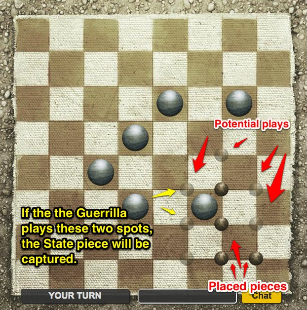

Guerrilla Checkers
By Brian Train
Table of Contents:
- Roles
- Winning
- State movement
- Guerrilla movement
-
Guerrillas: They receive 66 pieces and place two pieces each turn.
-
The State: They have six pieces, all of which are on the board at the start.


The player who clears the board of all enemy pieces at the end of his turn wins. The Guerrilla player loses if he runs out of stones.
The State player moves one checker per turn, one square diagonally as a King in regular checkers, or makes captures by jumping over the point between two squares. He is not forced to capture if he does not want to, but if he does he must take all possible captures. Captured stones are removed from the board.

The Guerrilla player does not move his pieces. Instead, he places two and only two stones per turn on the board, on the points (intersections) of the squares. The first stone must be orthogonally adjacent to any stone on the board; the second stone must be orthogonally adjacent to the first stone placed. He may not place stones on the board edge points. He captures an enemy checker by surrounding it (i.e. having a stone, or a board edge point, on each of the four points of the square the checker occupies – note this makes the edge of the board very dangerous for the State player). The checker is removed from the board.
